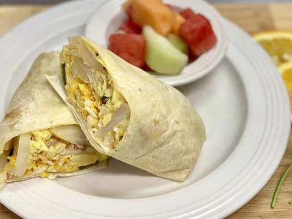

If you like eggs, and burritos, then you'll love this burrito. This should take about 15 minutes to make, more if you're like me and can't fold the tortilla.
Ingredients:
- 3 eggs
- 1 whole wheat tortilla
- 1/2 c mushrooms - sliced
- 1/4 c yellow onion - chopped
- 1 tbsp sour cream
- 1 tbsp salsa
- 1/4 c cheddar cheese - sliced
- Salt, pepper for taste
Nutrition:
- Protein: 32g
- Fat: 53g
- Carbs: 38g
Instructions:
- Scramble the eggs
- Saute the peppers, onions, and mushrooms
- Heat the torilla over a burner for about 20 seconds on each side.
- Place the ingredients into the tortilla and fold
- Enjoy the breakfast!
Home